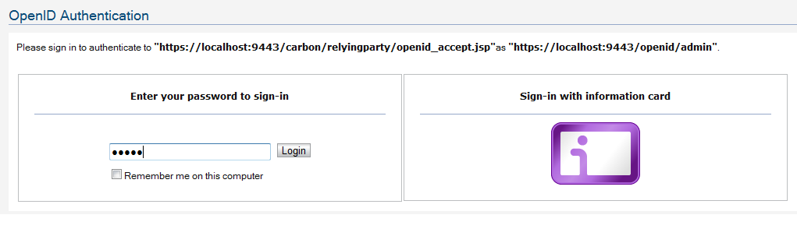
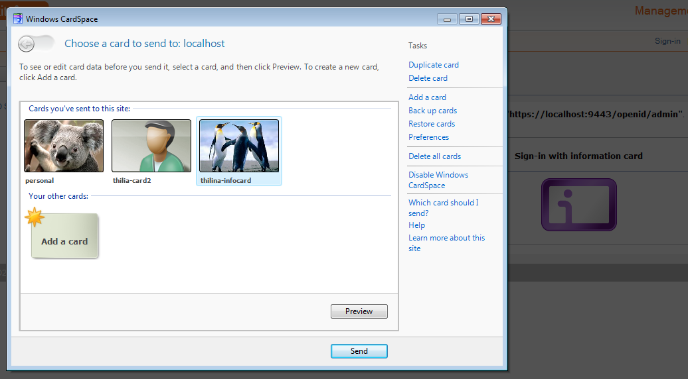
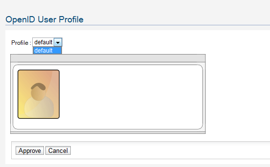

Once you enter an OpenID issued by the WSO2 Identity Server at any relying party end, you need to authenticate your self at the Identity Server end.
There are two main methods of authenticating to WSO2 Identity Server when it acts as the OpenID Provider. It is username/password based authentication and Information Card based authentication.
With Username/Password based authentication, users can authenticate using their credentials that they use to log into the management console.
Figure 1: authenticating using the username/password
Or else, users can use an Information Card issued by the Identity Server or any managed/self-issued card that was used when signing up with the Identity Server.
Figure 2: authenticating using a Information Cards
After providing the login credentials, it may prompt for multi-factor authentication if you it is enabled.
If authentication is successful, users will be asked to select a profile to used for attribute exchange. Identity Server will use this profile to extract the claims requested by the relying party.
Figure 3: Selecting a profile for attribute exchange.
After this step, Users will be redirected to the original relying party.